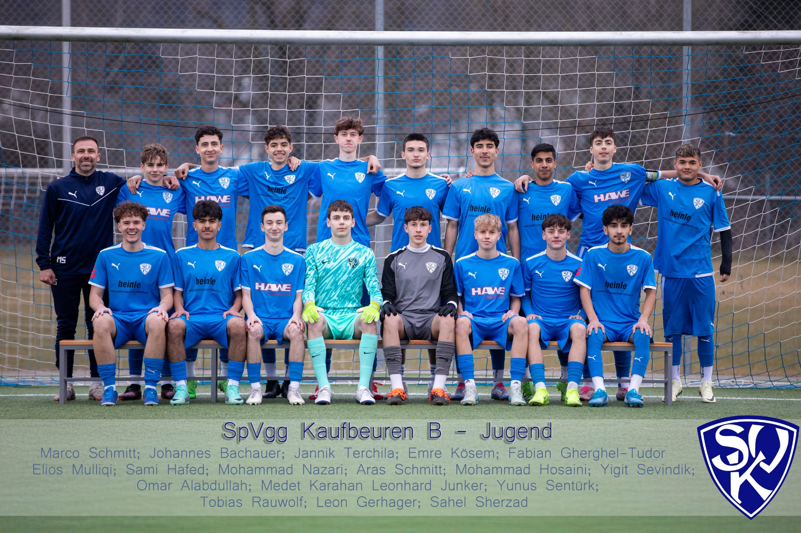

U17-Juniorenteam
Im Mittelpunkt stehen die fußballerische und persönliche Entwicklung der Spieler, ein klares Spielverständnis und ein starker Zusammenhalt.

Die U17 der SpVgg Kaufbeuren verbindet sportliche Entwicklung, Teamgeist und den Übergang in den leistungsorientierten Jugendfußball.
Im Mittelpunkt stehen die fußballerische und persönliche Entwicklung der Spieler, ein klares Spielverständnis und ein starker Zusammenhalt.
18:30 bis 20:15 Uhr
16:00 bis 17:30 Uhr
18:30 bis 20:00 Uhr
16:00 bis 17:30 Uhr
Wolftrigelstraße 11
87600 Kaufbeuren